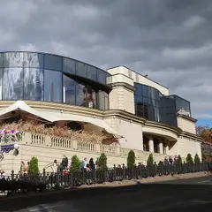

У метро · ЦАО
Куда сходить у метро «Трубная»
Для 20 мест из нашего каталога ближайшая станция — «Трубная» (ЦАО): 11 ресторанов и кафе, 6 баров, 2 развлечения и 1 театр. Например, «Центральный рынок», «Стендап клуб №1» и «Billie». Недорогих, примерно до 1 500 ₽ на человека, — 2. 11 готовых планов проходят через эту станцию — например, «Театр Наций и бар в старой типографии», с маршрутом пешком между точками.
- 20 мест
- 11 планов
Места у метро «Трубная» 20

Рождественский бул., 1
65+ корнеров с кухнями мира, по четвергам–субботам вечеринки. До 23:00, в чт–сб до полуночи.
Подробнее и маршрут: Центральный рынокПозвать сюда: Центральный рынок
Фото: T3ru, CC BY-SA 4.0 · Wikimedia Commons
Рождественский бул., 10/7, стр. 1
Первый стендап-клуб страны: концерты каждый день, в будни в 20:00, в выходные в 21:00.
Подробнее и маршрут: Стендап клуб №1Позвать сюда: Стендап клуб №1
ул. Неглинная, 29, стр. 1
Пул, русский и даже трёхногий бильярд, бар и стритфуд в здании XIX века. 14–02.
ул. Петровка, 30/7, фиолетовая дверь с глазом
Бар, названный в честь королевы вуду из Нового Орлеана: вход через фиолетовую дверь с нарисованным глазом, во дворе бывают ужины-путешествия.
ул. Петровка, 20/1
Новое
Бар в кирпичных сводах бывшей типографии на Петровке, вход через японский ресторан. В будни живой джаз и соул, в пятницу и субботу DJ до 4 утра.
Цветной бул., 2
Bib Gourmand Michelin 2021
Ресторан Уильяма Ламберти и Антона Пинского вернулся — теперь у Трубной.
Рождественский бул., 10/7, стр. 1
Шахматный клуб и бистро с французской кухней на холме у Трубной: доски нарисованы прямо на скатертях, с веранды видно город.
Трубная ул., 14
Новое
Небольшой английский паб на Трубной: десяток телевизоров по стенам, спорт показывают каждый день. К пиву — свинина и домашние колбаски, зимой греет камин.
Подробнее и маршрут: Свинья и розаПозвать сюда: Свинья и роза
ул. Неглинная, 29, стр. 1
Новое
Бывшая «Школа современной пьесы» в здании знаменитого ресторана «Эрмитаж» Люсьена Оливье на Трубной площади. Зал на 380 мест, после — прогулка по Цветному бульвару.
Подробнее и маршрут: Театр на ТрубнойПозвать сюда: Театр на Трубной
Трубная ул., 26, корп. 1
Французское бистро на Трубной без снобизма и официантов в перчатках.
Подробнее и маршрут: Bistro TrompetteПозвать сюда: Bistro Trompette
Колокольников пер., 2
Италия на открытом огне, домашняя паста и устричный бар в здании 1914 года у Цветного бульвара.
Петровский бул., 14
Авторская кухня в подвале XIX века, по пт–сб DJ. До 02.
Петровский бул., 15, стр. 1
Регулярные дегустации, лекции о вине и винные вечеринки.
Рождественский бул., 1
Ресторан White Rabbit Family с дровяной печью и грилем.
Трубная ул., 15
Домашняя итальянская кухня: чикетти, паста и пицца на тонком и толстом тесте. Чек ~1 400 ₽.
Цветной бул., 24, корп. 1
Бар на Цветном бульваре с дог-френдли воскресеньями.
Подробнее и маршрут: Петров и ВасечкаПозвать сюда: Петров и Васечка
Петровский бул., 15, стр. 1
Винный бар Влады и Макса Лесниченко: больше 100 вин по бокалам.
Колокольников пер., 3, стр. 2
Рыбная брассери с биргарденом у Цветного бульвара от Folk Team и Dreamteam.
Подробнее и маршрут: Anchovy's ClubПозвать сюда: Anchovy's Club
Цветной бул., 11, стр. 2
Устрицы, мидии и краб-доги на Цветном. До 23–00.
Подробнее и маршрут: Atlantica BistroПозвать сюда: Atlantica Bistro
ул. Петровка, 26, стр. 3
Кухня французских провинций в бывшем ателье с роялем. В пт–сб до 02.
Подробнее и маршрут: L’Atelier PetrovkaПозвать сюда: L’Atelier Petrovka
Готовые планы 11
- Театр Наций · Театр · м. Чеховская
- 7 минут пешкомMendeleev · Музыкальный бар
Громкая постановка в Театре Наций в здании театра Корша, а потом Mendeleev в кирпичных сводах бывшей типографии: в будни джаз и соул, в выходные DJ до 4 утра.
Открыть план: Театр Наций и бар в старой типографииПозвать сюда: Театр Наций и бар в старой типографии
Фото: Mike1979 Russia, CC BY-SA 3.0 · Wikimedia Commons
- Центральный рынок · Фудхолл · м. Трубная
- 2 минуты пешкомСтендап клуб №1 · Стендап
Сначала поесть на фудхолле, где каждый выберет своё, а потом в двух минутах — стендап в первом клубе страны.
Открыть план: Рынок и стендапПозвать сюда: Рынок и стендап
Фото: T3ru, CC BY-SA 4.0 · Wikimedia Commons
- Дом-музей Васнецова · Музей · м. Проспект Мира
- 12 минут пешкомBistro Trompette · Французское бистро
Терем, который Васнецов построил для себя, и французское бистро на Трубной.
Открыть план: Сказочный теремПозвать сюда: Сказочный терем
Фото: NVO, CC BY-SA 3.0 · Wikimedia Commons
- Центральный рынок · Фудхолл · м. Трубная
- 2 минуты пешкомСтендап клуб №1 · Стендап
Перекус на фудхолле с кухнями со всего мира, а потом смеяться вместе в первом стендап-клубе страны — он в двух минутах.
Открыть план: Ужин на рынке и стендапПозвать сюда: Ужин на рынке и стендап
Фото: T3ru, CC BY-SA 4.0 · Wikimedia Commons
- Центральный рынок · Фудхолл · м. Трубная
- 2 минуты пешкомСтендап клуб №1 · Стендап
Перекус на фудхолле и вечер смеха в первом стендап-клубе страны.
Открыть план: Ужин на рынке и стендапПозвать сюда: Ужин на рынке и стендап
Фото: T3ru, CC BY-SA 4.0 · Wikimedia Commons
- Винный базар · Винный бар · м. Трубная
- 10 минут пешкомSEMENOV · Караоке
Дегустация в «Винном базаре», а потом караоке с танцполом и кухней в 10 минутах пешком.
- Tatooine · Ресторан-кантина · м. Чеховская
- 7 минут пешкомBillie · Бильярдный клуб
Хычины и мясо в ресторане-кантине, потом бильярд до двух ночи — есть даже трёхногий стол.
Открыть план: Кантина и пул на НеглиннойПозвать сюда: Кантина и пул на Неглинной
Пара партий в американский пул — и через двести метров ужин с авторской кухней в подвале XIX века, а по пятницам и субботам там ещё играет DJ.
Открыть план: Пул и ужин в подвале XIX векаПозвать сюда: Пул и ужин в подвале XIX века
- Пешка · Шахматное бистро · м. Трубная
- 14 минут пешкомMarie Laveau · Бар
Партия за ужином в шахматном бистро на холме у Трубной, потом фиолетовая дверь с глазом — бар Marie Laveau на Петровке.
Открыть план: Шахматы и бар вудуПозвать сюда: Шахматы и бар вуду
- Marie Laveau · Бар · м. Трубная
Бар имени королевы вуду: найти фиолетовую дверь с глазом на Петровке — уже половина приключения.
Открыть план: Вечер за фиолетовой дверьюПозвать сюда: Вечер за фиолетовой дверью
- Loro · Итальянский ресторан · м. Трубная
Паста, устрицы и всё с открытого огня у Цветного бульвара.


Как позвать
- Выбери план, место или событие — в карточке адрес, цены и маршрут в Яндекс Картах.
- Нажми «Позвать сюда» — соберётся приглашение-игра для свидания или голосование для компании.
- Отправь ссылку в любой мессенджер: тебе ответят, а компания отметит, куда и когда может. Бесплатно и без регистрации.